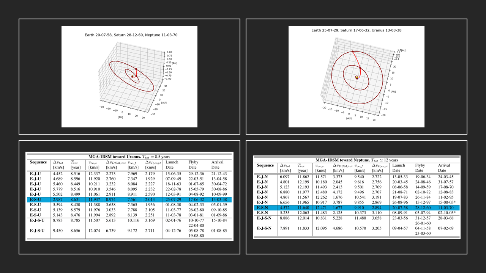
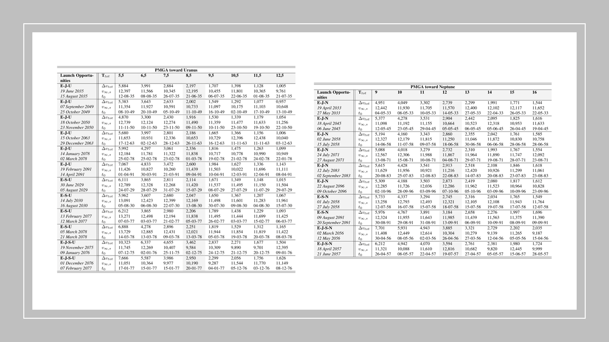
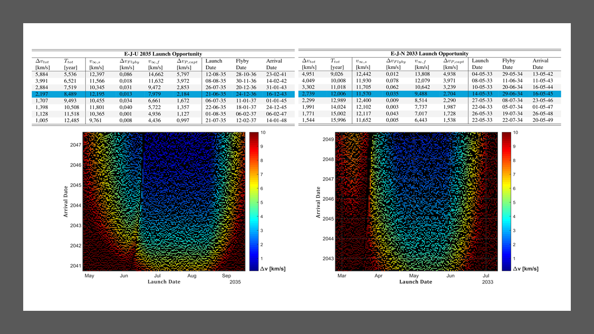
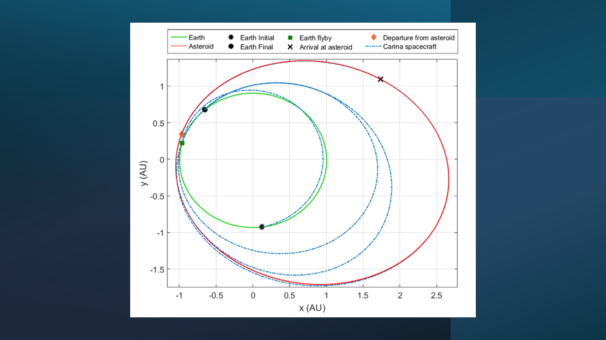

01 · Most recent
Trajectory optimization and mission design
CIRO develops trajectory-design methods for high-fidelity orbital transfers, multi-body flight, and interplanetary missions with flybys and deep-space maneuvers.
The work combines physical dynamics, mission constraints, and numerical optimization to obtain efficient trajectories for realistic mission environments, from Earth orbit and cislunar space to planetary destinations.




